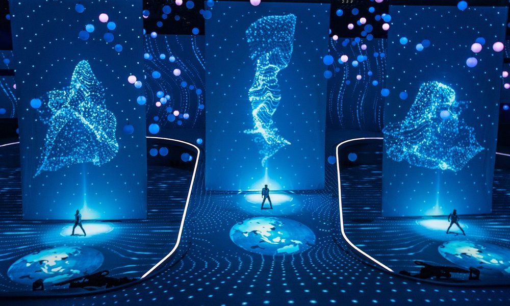
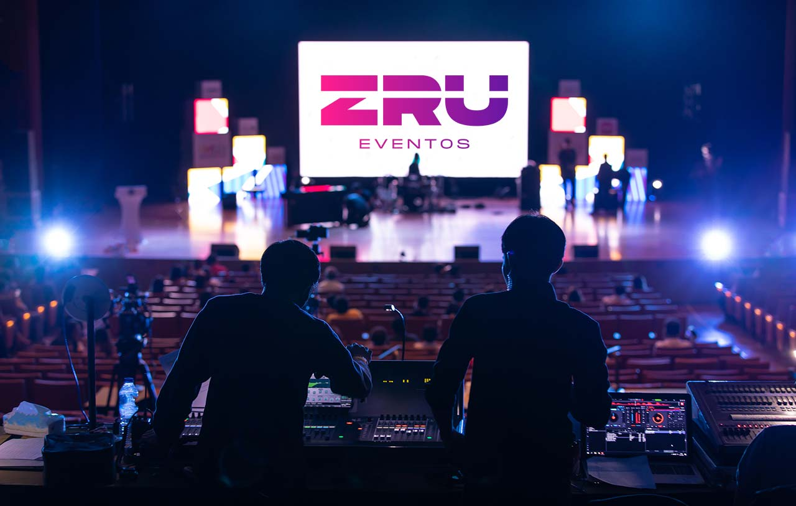

Sobre nuestros eventos

Nuestros eventos de Networking para Mujeres en Fintech son el espacio ideal para conectar,
aprender y crecer profesionalmente en un entorno inclusivo y dinámico. Diseñados para fomentar el intercambio de
conocimientos y experiencias, cada evento ofrece una oportunidad única de interactuar con líderes de la
industria,
expertos en tecnología financiera y otras profesionales que comparten tu visión de transformar el sector.
¿Cómo se organizan?

-
Modalidad presencial: Nos enorgullece brindar una experiencia presencial en lugares
cuidadosamente seleccionados para promover la comodidad, la inspiración y la creatividad.
-
Duración del evento: Cada evento tiene una duración de entre 6 y 8 horas, con actividades
divididas en bloques para optimizar el tiempo de los asistentes.
-
Actividades principales:
- Conferencias y charlas inspiradoras: Dirigidas por ponentes destacados, estas
sesiones
abordan temas como liderazgo femenino, innovación en fintech, inclusión digital y sostenibilidad.
- Talleres interactivos: Espacios prácticos diseñados para desarrollar habilidades
clave
como programación, análisis de datos y estrategias de negocio.
- Paneles de discusión: Líderes de la industria debaten sobre las tendencias actuales y
los desafíos del sector fintech, brindando perspectivas valiosas.
- Networking: Los asistentes pueden intercambiar ideas, establecer conexiones
profesionales y explorar oportunidades de colaboración durante las sesiones de networking.
-
Ubicaciones: Hemos realizado eventos en las principales ciudades del país, como Lima, Cusco
y
Arequipa, eligiendo puntos estratégicos que faciliten el acceso a nuestras participantes.
¿Qué pueden esperar los asistentes?
- Experiencia enriquecedora: Cada evento está diseñado para ser dinámico, atractivo y
educativo, asegurando que los asistentes se lleven ideas prácticas que puedan aplicar inmediatamente.
- Oportunidades de conexión: Construir una red de contactos es clave en el mundo fintech, y
estos eventos son el lugar perfecto para conocer mentores, potenciales colaboradores o incluso futuros
socios
de negocio.
- Ambiente inclusivo: Nuestro objetivo es crear un espacio donde las mujeres se sientan
empoderadas y apoyadas para avanzar en sus carreras tecnológicas y financieras.
- Materiales exclusivos: Al finalizar el evento, los participantes reciben acceso a
presentaciones, recursos educativos y guías prácticas para continuar su aprendizaje.